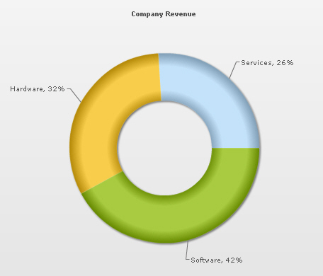

Functional Attributes Titles Chart Cosmetics Legend Tool-tip Paddings and Margins <set> element Plot Cosmetics Pie / Doughnut Properties Smart Labels and Lines Number Formatting Font Properties
Functional Attributes Titles Chart Cosmetics Legend Tool-tip Paddings and Margins <set> element Plot Cosmetics Pie / Doughnut Properties Smart Labels and Lines Number Formatting Font Properties| Quick Links (within this page) |
| Doughnut 2D chart looks as under: |
|  |
| Sample XML / JSON for Doughnut 2D chart: |
<chart caption='Company Revenue' showPercentageValues='1'> <set label='Services' value='26' /> <set label='Hardware' value='32' /> <set label='Software' value='42' /> </chart> {
|
|
Back to top |
| Chart Objects |
| Object Name | Description | Features Supported | Animation Parameters Supported |
| BACKGROUND | BACKGROUND refers to the entire background of the chart. |
|
|
| CAPTION | CAPTION refers to the heading of the chart. |
|
|
| SUBCAPTION | SUBCAPTION refers to the sub-heading of the chart. |
|
|
| DATAPLOT | DATAPLOT refers to the actual plot of the chart. For example, in Column 2D chart, columns are referred to as DATAPLOT. In Pie chart, it's the pies. In Bubble chart, it's the bubbles and so on. |
|
|
| DATALABELS | DATALABELS refer to the doughnut labels of the data. |
|
|
| TOOLTIP | TOOLTIP refers to the tool tip shown when the mouse is hovered over the data plots. |
|
|
|
Back to top |
|||
| <chart> element Attributes |
| Functional Attributes |
|
These attributes let you control a variety of functional elements on the chart. For example, you can opt to show/hide data labels, data values etc. You can also set chart limits and extended properties. |
| Attribute Name | Type | Range | Description |
| animation | Boolean | 0/1 | This attribute gives you the option to control animation in your charts. If you do not want to animate any part of the chart, set this as 0. |
| palette | Number | 1-5 | FusionCharts XT introduces the concept of Color Palettes. Each chart has 5 pre-defined color palettes which you can choose from. Each palette renders the chart in a different color theme. Valid values are 1-5. |
| paletteColors | String | List of hex color codes separated by comma | While the palette attribute allows to select a palette theme that applies to chart background, canvas, font and tool-tips, it does not change the colors of data items (i.e., column, line, pie etc.). Using paletteColors attribute, you can specify your custom list of hex colors for the data items. The list of colors have to be separated by comma e.g., <chart paletteColors='FF0000,0372AB,FF5904...'>. The chart will cycle through the list of specified colors and then render the data plot accordingly. To use the same set of colors throughout all your charts in a web application, you can store the list of palette colors in your application globally and then provide the same in each chart XML. |
| showAboutMenuItem | Boolean | 0/1 | Setting this to 1 shows up a custom context menu in the chart, which can be customized to show your text and can be linked to your Url. For e.g., you can set the context menu of the chart to include "About your company name" and then link to your company home page. By default, the chart shows "About FusionCharts" when right clicked. |
| aboutMenuItemLabel | String | The menu item label for the custom context menu item. | |
| aboutMenuItemLink | String | URL | Link for the custom context menu item. You can specify the link in FusionCharts Link format to be able to open the same in new window, pop-ups, frames or as JavaScript links. |
| showZeroPies | Boolean | 0/1 | Configuration whether to show pies with 0 values (and their values). Otherwise, they won't show up in the chart. |
| showPercentValues | Boolean | 0/1 | Whether to show percentage values in labels of the chart. |
| showPercentInToolTip | Boolean | 0/1 | Whether to show percentage values in tool tip. |
| showLabels | Boolean | 0/1 | Whether to show labels on the chart. |
| showValues | Boolean | 0/1 | Whether to show values on the chart. |
| labelSepChar | String | Character | The character to separate the data label and data values on the chart. |
| defaultAnimation | Boolean | 0/1 | By default, each chart animates some of its elements. If you wish to switch off the default animation patterns, you can set this attribute to 0. It can be particularly useful when you want to define your own animation patterns using STYLE feature. |
| clickURL | String | The entire chart can now act as a hotspot. Use this URL to define the hotspot link for the chart. The link can be specified in FusionCharts Link format. | |
|
Back to top |
|||
| Chart Titles |
|
Using these attributes, you can set the various headings and titles of chart like caption and sub-caption. |
| Attribute Name | Type | Description |
| caption | String | Caption of the chart. |
| subCaption | String | Sub-caption of the chart. |
|
Back to top |
||
| Chart Cosmetics |
|
The following attributes let you configure chart cosmetics like background color, background alpha etc. |
| Attribute Name | Type | Range | Description |
| showBorder | Boolean | 0/1 | Whether to show a border around the chart or not. |
| borderColor | Color | Border color of the chart. | |
| borderThickness | Number | In Pixels | Border thickness of the chart. |
| borderAlpha | Number | 0-100 | Border alpha of the chart. |
| bgColor | Color | This attribute sets the background color for the chart. You can set any hex color code as the value of this attribute. To specify a gradient as background color, separate the hex color codes of each color in the gradient using comma. Example: FF5904,FFFFFF. Remember to remove # and any spaces in between. See Advanced charting > Using Gradients page for more details. | |
| bgAlpha | Number | 0-100 | Sets the alpha (transparency) for the background. If you've opted for gradient background, you need to set a list of alpha(s) separated by comma. See Advanced charting > Using Gradients page for more details. |
| bgRatio | Number | 0-100 | If you've opted for a gradient background, this attribute lets you set the ratio of each color constituent. See Advanced charting > Using Gradients page for more details. |
| bgAngle | Number | 0-360 | Sets the angle of the background color, in case of a gradient. See Advanced charting > Using Gradients page for more details. |
bgImage
or bgSWF - deprecated |
String |
To place any image (JPG/PNG/GIF) or Flash movie (SWF) as background of the chart, enter the (path and) name of the background image or SWF file. It should be in the same domain as the chart. Loading of Flash movie is deprecated and is not supported by JavaScript charts. |
|
bgImageAlpha
or bgSWFAlpha - deprecated |
Number | 0-100 |
Helps you specify alpha for the loaded background image or Flash movie. Loading of Flash movie is deprecated and is not supported by JavaScript charts. |
|
bgImageDisplayMode Since v3.2.2 |
String | stretch, tile, fit, fill, center, none |
Helps you specify the mode in which the background image is to be displayed.
|
|
bgImageVAlign Since v3.2.2 |
String | top, middle, bottom | Helps you to vertically align the background image. |
|
bgImageHAlign Since v3.2.2 |
String | left, middle, right | Helps you to horizontally align the background image. |
|
bgImageScale Since v3.2.2 |
Number | 0-300 | Helps you magnify the background image.This attribute will only work when the attribute bgImageDisplayMode is set to none, center or tile. |
| showVLineLabelBorder | Boolean | 0/1 | If you've opted to show a label for any of your vLines in the chart, you can collectively configure whether to show border for all such labels using this attribute. If you want to show label border for just a particular vLine, you can over-ride this value by specifying border configuration for that specific vLine. |
| logoURL | String | URL | You can load an external logo (JPEG/PNG/SWF) on the chart once it has rendered. This attribute lets you specify the URL of the same. Owing to Flash Player security settings, you can only specify logo that are on the same sub-domain as that of the SWF file of the chart. |
| logoPosition | String | TL, TR, BL, BR, CC | Where to position the logo on the chart:
|
| logoAlpha | Number | 0-100 | Once the logo has loaded on the chart, you can configure its opacity using this attribute. |
| logoScale | Number | 0-300 | You can also change the scale of externally loaded logo at run-time by specifying a value for this parameter. |
| logoLink | String | URL | If you want to link the logo to an external URL, specify the link in this attribute. The link can be in FusionCharts Link format, allowing you to link to new windows, pop-ups, frames etc. |
|
Back to top |
|||
| Data Plot Cosmetics |
|
These attributes let you configure how your plot (columns, lines, area, pie or any data that you're plotting) will appear on the chart. If the plots can show borders, you can control the border properties using the attributes listed below. Or, if they support gradient fills, you can again configure various properties of the gradient using these attributes. Various other controls over plot cosmetics can be attained using this set of attributes. |
| Attribute Name | Type | Range | Description |
| showPlotBorder | Boolean | 0/1 | Whether the column, area, pie etc. border will show up. |
| plotBorderColor | Color | Color for column, area, pie border | |
| plotBorderThickness | Number | 0-5 (Pixels) | Thickness for column, area, pie border |
| plotBorderAlpha | Number | 0-100 | Alpha for column, area, pie border |
| plotFillAlpha | Number | 0-100 | This attribute lets you set the fill alpha for plot. |
| use3DLighting | Boolean | 0/1 | Whether to use advanced gradients and shadow effects to create better looking 3D charts. |
| showShadow | Boolean | 0/1 | Whether to show shadow for pie/doughnuts. |
|
Back to top |
|||
| Pie / Doughnut Properties |
|
The following attributes let you control various functionalities of pie/doughnut chart. |
| Attribute Name | Type | Range | Description |
| pieRadius | Number | In Pixels | This attribute lets you explicitly set the outer radius of the chart. FusionCharts XT automatically calculates the best fit pie radius for the chart. This attribute is useful if you want to enforce one of your own values. |
| doughnutRadius | Number | In Pixels | This attribute lets you explicitly set the inner radius of the chart. FusionCharts XT automatically calculates the best fit radius for the chart. This attribute is useful if you want to enforce one of your own values. |
| startingAngle | Number | 0-360 |
By default, the doughnut chart starts from angle 0 degree i.e., the first doughnut slice starts plotting from 0 degree angle. If you want to change the starting angle of the chart, use this attribute. It obeys the conventions of co-ordinate geometry where 0 degrees means hand of a clock at 3. Starting angle Increases anti-clockwise. |
| radius3D | Number | In Percent | You can define the 3D Radius of chart in percentage using this attribute. It basically helps you set the bevel distance for the pie/doughnut (if in 3D Lighting Mode). |
| slicingDistance | Number | In Pixels | If you've opted to slice a particular pie/doughnut slice, using this attribute you can control the distance between the slice and the center of chart. |
| enableRotation | Boolean | 0/1 | The doughnut charts have three modes: Slicing, Rotation and Link. By default, a chart starts in Slicing mode. If you need to enable rotation from XML, set this attribute to 1. But, when links are defined, the chart always works in Link mode irrespective of the value of this attribute. |
|
Back to top |
|||
| Smart Labels & Lines |
|
In FusionCharts XT, the pie and doughnut charts can now have smart labels and lines. Smart labels/lines are data connector lines which connect the pie/doughnut slices to their respective labels without over-lapping even in cases where there are lots of labels located near each other. You can configure the smart labels/lines properties using the attributes below. |
| Attribute Name | Type | Range | Description |
| labelDistance | Number | In Pixels | This attribute helps you set the distance of the label/value text boxes from the pie/doughnut edge. |
| smartLabelClearance | Number | In Pixels | Clearance distance of a label (for sliced-in pies) from an adjacent sliced out pies. |
| enableSmartLabels | Boolean | 0/1 | Whether to use smart labels or not. |
| skipOverlapLabels | Boolean | 0/1 | Whether to skip labels that are overlapping even when using smart labels. If not, they might overlap if there are too many labels. |
| isSmartLineSlanted | Boolean | 0/1 | The smart lines (smart label connector lines) can appear in two ways: Slanted or Straight. This attribute lets you choose between them. |
| smartLineColor | Color | Hex Code | Color of smart label connector lines. |
| smartLineThickness | Number | In Pixels | Thickness of smart label connector lines. |
| smartLineAlpha | Number | 0-100 | Alpha of smart label connector lines. |
| manageLabelOverflow | Boolean | 0/1 | This attribute tries to manage overflow of data labels. If enabled, data labels are either wrapped or truncated with ellipses to prevent them from overflowing out of the chart canvas.
In case smartLabels is disabled, the labels are wrapped to avoid the overflow. Since smartLabels is disabled, the wrapped labels might get overlapped. When smartLabels is enabled, management of the overflowing labels fit in the "quadrant specific smart labeling algorithm". Data labels try to wrap first. In case, there is constrain of space in the quadrant, the labels get truncated with ellipses. |
| useEllipsesWhenOverflow
Since v 3.2.1
|
Boolean | 0/1 | When enabled, long data labels are truncated by adding ellipses to prevent them from overflowing the chart background. The default value is 1. This setting works only when manageLabelOverflow is set to 1. |
|
Back to top |
|||
| Number Formatting |
|
FusionCharts XT offers you a lot of options to format your numbers on the chart. Using the attributes below, you can control a myriad of options like:
|
| Attribute Name | Type | Range | Description |
| formatNumber | Boolean | 0/1 | This configuration determines whether the numbers displayed on the chart will be formatted using commas, e.g., 40,000 if formatNumber='1' and 40000 if formatNumber= '0'. For more details, please see Advanced Charting > Number Formatting > Basics page. |
| formatNumberScale | Boolean | 0/1 | Configuration whether to add K (thousands) and M (millions) to a number after truncating and rounding it - e.g., if formatNumberScale is set to 1, 1043 will become 1.04K (with decimals set to 2 places). Same with numbers in millions - an M will be added at the end. For more details, please see Advanced Charting > Number Formatting > Number Scaling page. |
| defaultNumberScale | String | The default unit of the numbers that you're providing to the chart. For more details, please see Advanced Charting > Number Formatting > Number Scaling page. | |
| numberScaleUnit | String | Unit of each block of the scale. For more details, please see Advanced Charting > Number Formatting > Number Scaling page. | |
| numberScaleValue | String | Range of the various blocks that constitute the scale. For more details, please see Advanced Charting > Number Formatting > Number Scaling page. | |
| scaleRecursively Since v 3.2.2 - SR3 |
Boolean | 0/1 | Whether to scale the number recursively? For more details, please see Advanced Charting > Number Formatting > Recursive Number Scaling page. |
| maxScaleRecursion Since v 3.2.2 - SR3 |
Number | How many recursions to complete during recursive scaling? -1 completes the entire set of recursion. For more details see Advanced Charting > Number Formatting > Recursive Number Scaling page. | |
| scaleSeparator Since v 3.2.2 - SR3 |
String | What character to use to separate the scales that generated after recursion? For more details see Advanced Charting > Number Formatting > Recursive Number Scaling page. | |
| numberPrefix | String | Character | Using this attribute, you could add prefix to all the numbers visible on the graph. For example, to represent all dollars figure on the chart, you could specify this attribute to ' $' to show like $40000, $50000. For more details, please see Advanced Charting > Number Formatting > Basics page. |
| numberSuffix | String | Character | Using this attribute, you could add a suffix to all the numbers visible on the graph. For example, to represent all figure quantified as per annum on the chart, you could specify this attribute to ' /a' to show like 40000/a, 50000/a. For more details, please see Advanced Charting > Number Formatting > Basics page. |
| decimalSeparator | String | Character | This option helps you specify the character to be used as the decimal separator in a number. For more details, please see Advanced Charting > Number Formatting > Basics page. |
| thousandSeparator | String | Character | This option helps you specify the character to be used as the thousands separator in a number. For more details, please see Advanced Charting > Number Formatting > Basics page. |
|
thousandSeparatorPosition Since v 3.2.2 - SR3 |
Number | This option helps you specify the position of the thousand separator. For more details, please see Advanced Charting > Number Formatting > Basics page. | |
| inDecimalSeparator | String | Character | In some countries, commas are used as decimal separators and dots as thousand separators. In XML, if you specify such values, it will give an error while converting to number. So, FusionCharts XT accepts the input decimal and thousand separator from user, so that it can convert it accordingly into the required format. This attribute lets you input the decimal separator. For more details, please see Advanced Charting > Number Formatting > Input Number Formatting page. |
| inThousandSeparator | String | Character | In some countries, commas are used as decimal separators and dots as thousand separators. In XML, if you specify such values, it will give an error while converting to number. So, FusionCharts XT accepts the input decimal and thousand separator from user, so that it can convert it accordingly into the required format. This attribute lets you input the thousand separator. For more details, please see Advanced Charting > Number Formatting > Input Number Formatting page. |
| decimals | Number | 0-10 | Number of decimal places to which all numbers on the chart will be rounded to. For more details, please see Advanced Charting > Number Formatting > Basics page. |
| forceDecimals | Boolean | 0-1 | Whether to add 0 padding at the end of decimal numbers. For example, if you set decimals as 2 and a number is 23.4. If forceDecimals is set to 1, FusionCharts XT will convert the number to 23.40 (note the extra 0 at the end). For more details, please see Advanced Charting > Number Formatting > Basics page. |
|
Back to top |
|||
| Font Properties |
|
Using the attributes below, you can define the generic font properties for all the text on the chart. These attributes allow you a high level control over font properties. If you intend to specify font properties for individual chart elements (like Caption, sub-caption etc.), you'll need to use the Styles feature of FusionCharts XT. Using Styles, you can also specify advanced font properties like Bold, Italics, HTML Mode etc. |
| Attribute Name | Type | Range | Description |
| baseFont | String | Font Name | This attribute lets you set the font face (family) of all the text (data labels, values etc.) on chart. |
| baseFontSize | Number | 0-72 | This attribute sets the base font size of the chart i.e., all the values and the names in the chart which lie on the canvas will be displayed using the font size provided here. |
| baseFontColor | Color | This attribute sets the base font color of the chart i.e., all the values and the names in the chart which lie on the canvas will be displayed using the font color provided here. | |
|
Back to top |
|||
| Legend Properties |
|
In pie / doughnut charts, the name of each slice shows up in the legend of the chart. If you do not need the legend, you can opt to hide the same. Also, the legend can be placed at the bottom of the chart or to the right of the chart. Using the attributes below, you can configure the functional and cosmetic properties of the legend. |
| Attribute Name | Type | Range | Description |
| showLegend
Since v 3.2 |
Boolean | 0/1 | Whether to show legend for the chart (only multi-series and combination charts). |
| legendPosition
Since v 3.2 |
String | BOTTOM or RIGHT |
The legend can be plotted at two positions on the chart - below the chart (BOTTOM) and on the RIGHT side of the chart. |
| legendCaption
Since v 3.2 |
String | You can add a caption for the entire legend by setting the same here. | |
| legendIconScale
Since v 3.2 |
Number | Greater than 0 and less than equal to 5 | Scaling of legend icon is possible in FusionCharts XT. This attribute lets you control the size of the legend icon. The default scale value is 1. Anything less than 1 reduces the size of the legend-icons on the chart. Any value bigger than 1 enlarges the icons. e.g., 0.5 means half the size, where as, 2 means twice the size. |
| legendBgColor
Since v 3.2 |
Color | Hex Code | Background color for the legend. |
| legendBgAlpha
Since v 3.2 |
Number | 0-100 | Background alpha for the legend. |
| legendBorderColor
Since v 3.2 |
Color | Hex Code | Border Color for the legend. |
| legendBorderThickness
Since v 3.2 |
Number | In Pixels | Border thickness for the legend. |
| legendBorderAlpha
Since v 3.2 |
Number | 0-100 | Border alpha for the legend. |
| legendShadow
Since v 3.2 |
Boolean | 0/1 | Whether to show a shadow for legend. |
| legendAllowDrag
Since v 3.2 |
Boolean | 0/1 | The legend can be made drag-able by setting this attribute to 1. End viewers of the chart can drag the legend around on the chart. |
| legendScrollBgColor
Since v 3.2 |
Color | Hex Code | If you've too many items on the legend, a scroll bar shows up on the same. This attribute lets you configure the background color of the scroll bar. |
| legendScrollBarColor
Since v 3.2 |
Color | Hex Code | If you've too many items on the legend, a scroll bar shows up on the same. This attribute lets you configure the bar color of the scroll bar. |
| legendScrollBtnColor
Since v 3.2 |
Color | Hex Code | If you've too many items on the legend, a scroll bar shows up on the same. This attribute lets you configure the color of buttons of the scroll bar. |
| reverseLegend
Since v 3.2 |
Boolean | 0/1 | You can reverse the ordering of datasets in the legend by setting this attribute to 1. |
| interactiveLegend
Since v 3.2 |
Boolean | 0/1 | This attribute lets you interact with the legend in your chart. When you click a particular legend key, the associated slice slides out from the chart. Re-clicking the key causes the slice to slide in. |
| legendNumColumns
Since v 3.2 |
Number | Zero and Positive Integers | The legend items are arranged in columns. Using this attribute, you can propose the number of columns. This value undergoes internal checking on judicious use of white-space. In case, the value is found improper, the chart auto-calculates the number of columns.
When set to 0, the chart automatically decides the number of columns. The above is applicable when legendPosition is set to BOTTOM. If you have set RIGHT legendPosition, the number of columns is always set to 1. |
| minimiseWrappingInLegend
Since v 3.2 |
Boolean | 0/1 | Whether to minimize legend item text wrapping. |
|
Back to top |
|||
| Tool-tip |
|
These attributes let you control the tool tip. You can set the background color, border color, separator character and few other details. |
| Attribute Name | Type | Range | Description |
| showToolTip | Boolean | 0/1 | Whether to show tool tip on chart. |
| toolTipBgColor | Color | Background Color for tool tip. | |
| toolTipBorderColor | Color | Border Color for tool tip. | |
| toolTipSepChar | String | The character specified as the value of this attribute separates the name and value displayed in tool tip. | |
| showToolTipShadow | Boolean | 0/1 | Whether to show shadow for tool-tips on the chart. |
|
Back to top |
|||
| Chart Padding & Margins |
|
The following attributes help you control chart margins and paddings. FusionCharts XT allows you to manually customize the padding of various elements on the chart to allow advanced manipulation and control over chart visualization. You can also define the chart margins. Chart Margins refer to the empty space left on the top, bottom, left and right of the chart. That means, FusionCharts XT will not plot anything in that space. It's not necessary for you to specify any padding/margin values. FusionCharts XT automatically assumes the best values for the same, if you do not specify the same. |
| Attribute Name | Type | Range | Description |
| captionPadding | Number | In Pixels | This attribute lets you control the space (in pixels) between the sub-caption and top of the doughnut. If the sub-caption is not defined, it controls the space between caption and top of the doughnut. If neither caption, nor sub-caption is defined, this padding does not come into play. |
| chartLeftMargin | Number | In Pixels | Amount of empty space that you want to put on the left side of your chart. Nothing is rendered in this space. |
| chartRightMargin | Number | In Pixels | Amount of empty space that you want to put on the right side of your chart. Nothing is rendered in this space. |
| chartTopMargin | Number | In Pixels | Amount of empty space that you want to put on the top of your chart. Nothing is rendered in this space. |
| chartBottomMargin | Number | In Pixels | Amount of empty space that you want to put on the bottom of your chart. Nothing is rendered in this space. |
|
Back to top |
|||
| <set> element |
|
Each <set> element (child of <chart> element) represents a set of data which is to be plotted on the graph and determines a set of data which will appear on the chart. For a doughnut chart, a typical <set> element will look like: <set label='January' value='17400' /> |
| Attribute Name | Type | Range | Description |
| label | String | This attribute determines the label for the data item. The label appears on the x-axis of chart. | |
| value | Number | Numerical value for the data item. This value will be plotted on the chart. | |
| displayValue | String | If instead of the numerical value of this data, you wish to display a custom string value, you can specify the same here. Examples are annotation for a data item etc. | |
| color | Color | Hex Code | If you want to define your own colors for the data items on chart, use this attribute to specify color for the data item. This attribute accepts hex color codes without #. |
| link | String | You can define links for individual data items. That enables the end user to click on data items (columns, lines, bars etc.) and drill down to other pages. To define the link for data items, use the link attribute. You can define links that open in same window, new window, pop-up window or frames. Please see "Drill Down Charts > FusionCharts Link format" for more information. Also, you'll need to URL Encode all the special characters (like ? and &) present in the link. | |
| toolText | String | By default, FusionCharts XT shows the data item name and value as tool tip text for that data item. But, if you want to display more information for the data item as tool tip, you can use this attribute to specify the same. | |
| dashed | Boolean | 0/1 | Whether the border of this data item should appear as dashed. This is particularly useful when you want to highlight a data (such as forecast or trend etc.). |
| alpha | Number | 0-100 | This attribute determines the transparency of a data item. The range for this attribute is 0 to 100. 0 means complete transparency (the data item wont be shown on the graph) and 100 means opaque. |
| borderColor | Color | Hex Code | If you want to set border color of individual pie/doughnut data items, you can specify using this attribute. |
| borderAlpha | Color | Hex Code | If you want to set border alpha of individual pie/doughnut data items, you can specify using this attribute. |
| isSliced | Boolean | 0/1 | This attribute determines whether the pie appears as a part of the total chart or is sliced out as an individual item. |
|
showLabel Since v 3.2.2 - SR5 |
Boolean | 0/1 | You can individually opt to show/hide labels of individual data items using this attribute. |
|
Back to top |
|||
The chart also accepts the following features, which have not been discussed here:
|